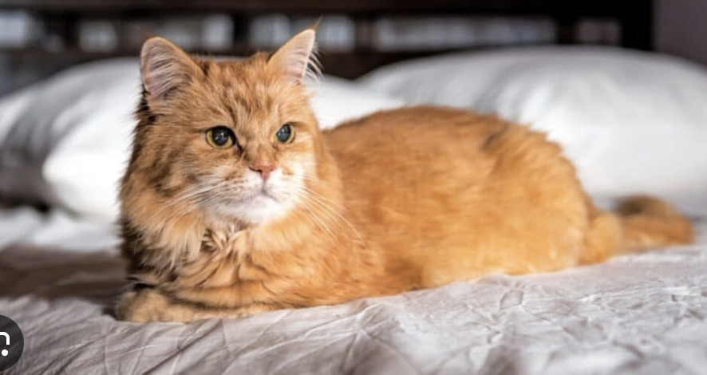
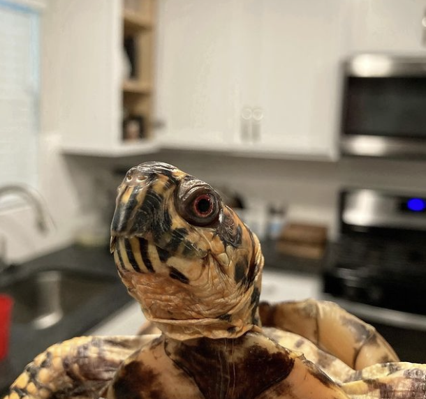

Bacon Q Dog

Bacon Q. Dog is a 9yr old labradoodle. He prefers to spend his days lounging among the three different beds/couches that his family has gifted him. He enjoys a walk or two around the neighborhood, as long as he can pretend that he doesn't see any of the other animals to avoid the embarrassment of not wanting to admit he has no wolf-like skills in chasing them.
At night just as the rest of the family is ready to relax, Bacon suddenly wants to release all of his energy. He will place his toys on a mini couch and frantically drag the couch around, giving his toys "a ride." There is also a lot of rolling. Lots and lots of rolling.
Photo Gallery


Likes
- Belly rubs
- Playing tug-of-war
- Sneaking onto the couch
Simba
Simba, the orange cat, is a bundle of playful energy with a vibrant and charming personality. His furry coat, adorned in shades of warm orange, matches his lively spirit as he prances around with a mischievous twinkle in his eyes. Simba's affectionate nature makes him a beloved companion, and his distinctive orange hue adds a touch of sunshine to any room he enters.
With a regal air about him, Simba carries himself with grace and confidence. His amber-colored fur is reminiscent of a majestic lion, and his playful antics reveal a heart full of curiosity and joy. Simba's presence brings warmth and cheer to those lucky enough to share their days with this delightful orange feline friend.
Photo Gallery
Likes
- Treats
- Staying Indoors
- Playing with toys
Maxx
Maxxlonia, the serene turtle, is a creature of tranquility and wonder. Her beautifully patterned shell, adorned with earthy tones, reflects the calm and peaceful nature she exudes. Maxxlonia gracefully navigates through her aquatic world, embodying the wisdom of the depths beneath.
WWith a slow and deliberate pace, Maxxlonia moves through life, taking in the surroundings with a watchful eye. Her patient demeanor and timeless presence make her a fascinating companion, bringing a sense of harmony to the space she inhabits. Maxxlonia's intricate patterns on her shell tell a story of resilience and the quiet beauty found in the rhythm of the underwater realm.
Photo Gallery
Likes
- lettuce
- Basking in the sun
- Adventure and exploring